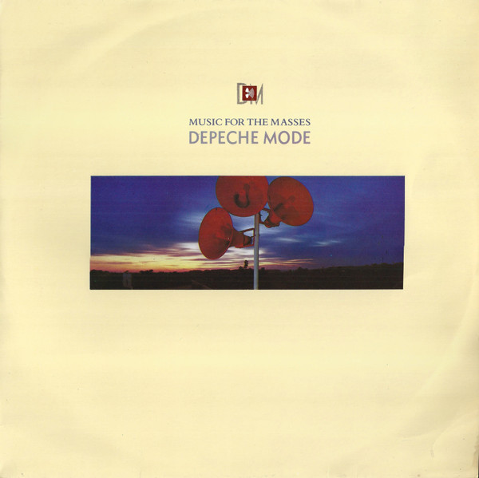

Music For The Masses é um albúm do Depeche Mode lançado em 1987 contendo originalmente 14 faixas. Com a versão Deluxe, o álbum contém ao todo 18 faixas.
Faixas
- Never Let Me Down Again
- The Things You Said
- Strangelove
- Sacred
- Little 15
- Behind The Wheel
- I Want You Now
- To Have And To Hold
- Nothing
- Pimpf
- Agent Orange
- Never Let Me Down Again (Aggro mix)
- To Have And To Hold (Spanish Taster)
- Pleasure, Little Treasure (Glitter Mix)
Faixas Deluxe
- Pleasure, Little Treasure
- Route 66
- Stjarna
- Sonata No.14 in C#m (Moonlight Sonata)
voltar para casa